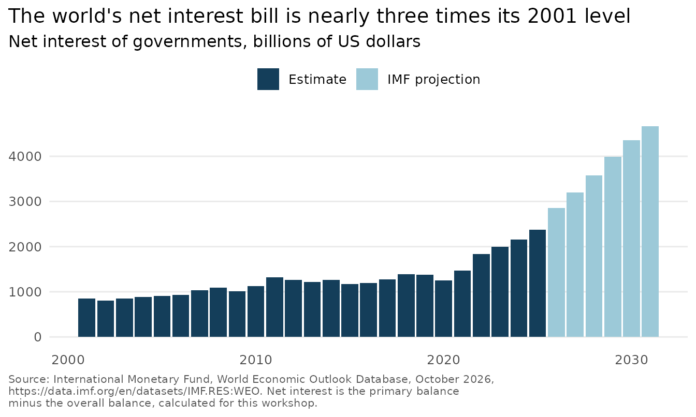

saisdata puts the course data for the SAIS MIEF R
workshop one line away. Everything on this page runs offline: the data
are inside the package.
This package is not an official IMF or World Bank product.
Install and load
Run this once, in the R Console:
install.packages("saisdata", repos = "https://teal-insights.r-universe.dev")Then load it in each session. There is nothing else to read in:
A small example with nothing else installed
weo has one row per country and year. This uses only
base R, so it works in a brand new R library. Net interest is not a
column; it is the primary balance minus the overall balance.
kenya <- subset(weo, code == "KEN" & year >= 2020 & year <= 2025)
kenya$net_interest <- kenya$primary_balance - kenya$overall_balance
as.data.frame(kenya[, c("year", "gross_debt", "net_interest")])
#> year gross_debt net_interest
#> 1 2020 67.959 3.925
#> 2 2021 68.232 4.091
#> 3 2022 67.800 4.374
#> 4 2023 73.405 4.786
#> 5 2024 67.306 5.247
#> 6 2025 71.269 5.447Kenya’s interest bill took about 5.4 percent of GDP in 2025, on gross debt of about 71 percent of GDP.
Join the World Bank’s groups
wb_groups joins to weo by
code. This gives the typical country’s gross debt in 2025
at each income level:
Tidy the IMF’s own layout
weo_groups keeps the IMF’s layout, with the years
across. If you have the tidyverse, two moves make it tidy, and one more
gives the world’s interest bill in dollars.
library(dplyr)
library(tidyr)
library(ggplot2)
bill <- weo_groups |>
select(-indicator_name, -units) |> # keep the codes, drop the long text
pivot_longer(
cols = `2001`:`2031`, # every year column
names_to = "year", # the column names become a year column
names_transform = as.integer, # "2025" becomes the number 2025
values_to = "value"
) |>
pivot_wider(names_from = indicator, values_from = value) |> # one per indicator
mutate(
net_interest_usd_bn = (GGXONLB_NGDP - GGXCNL_NGDP) * NGDPD / 100
) |>
summarize(net_interest_usd_bn = sum(net_interest_usd_bn), .by = year)
filter(bill, year %in% c(2001, 2025))
#> # A tibble: 2 × 2
#> year net_interest_usd_bn
#> <int> <dbl>
#> 1 2001 849.
#> 2 2025 2371.The two groups’ balances are averages weighted by GDP, so this total is an approximation.
Chart it, and print the credit
Every chart made from these data carries a source line. From 2026 on the values are IMF projections, so the chart dashes them. This chart uses no World Bank groups, so its source line drops that sentence.
labeled <- filter(bill, year %in% c(2001, 2025, 2031))
labeled$label <- format(round(labeled$net_interest_usd_bn), big.mark = ",", trim = TRUE)
ggplot(bill, aes(year, net_interest_usd_bn)) +
geom_line(data = filter(bill, year <= 2025), color = "#1F6F78", linewidth = 0.8) +
geom_line(
data = filter(bill, year >= 2025),
color = "#1F6F78", linewidth = 0.8, linetype = "22"
) +
geom_point(data = labeled, color = "#1F6F78", size = 2.4) +
geom_text(
data = labeled,
aes(label = label),
hjust = c(0.5, 1.2, 0.5), # the 2025 label sits left of the line
vjust = c(-1, 0, -1),
size = 3.6,
color = "grey20"
) +
scale_y_continuous(
limits = c(0, NA),
expand = expansion(mult = c(0, 0.14)),
labels = function(x) format(x, big.mark = ",", trim = TRUE)
) +
labs(
title = "The world's net interest bill is nearly three times its 2001 level",
subtitle = "Net interest of governments, billions of US dollars. Dashed: IMF projections",
x = NULL,
y = NULL,
caption = paste(
"Source: International Monetary Fund, World Economic Outlook Database, October 2026,",
"https://data.imf.org/en/datasets/IMF.RES:WEO.\nNet interest is the primary balance",
"minus the overall balance, calculated for this workshop."
)
) +
theme_minimal(base_size = 12) +
theme(
panel.grid.minor = element_blank(),
panel.grid.major.x = element_blank(),
plot.caption = element_text(hjust = 0, size = 8, color = "grey35"),
plot.title.position = "plot",
plot.caption.position = "plot"
)
Where to read more
-
?weo,?weo_groupsand?wb_groupssay what one row is, the units, the source, the vintage and what was changed. -
citation("saisdata")prints how to cite the package and the data. -
system.file("LICENSE-data.md", package = "saisdata")is the path to the data terms. The MIT license covers the package’s code and documentation, not the data.